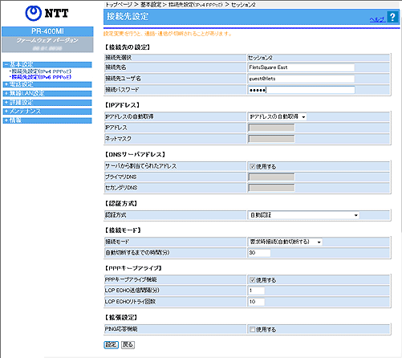
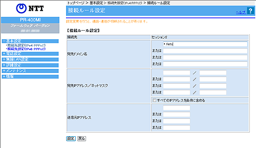

| 1. |
【IPv6をご利用可能なお客様】
特別な設定は不要です。
【IPv6をご利用いただけないお客様】
パソコンを起動する |
| 2. |
Webブラウザを起動し、「Web設定」のページを開く
Webブラウザのアドレスに「http://ntt.setup/」と入力後、パソコンの「Enter」キーを押します。
アドレスには、本商品のIPアドレス(工場出荷時は192.168.1.1)を入力して開くこともできます。
|
| 3. |
ユーザー名に'user'と入力し、機器設定用パスワードを入力する
ユーザー名は、すべて半角小文字で入力してください。 |
| 4. |
「基本設定」-「接続先設定（IPv4 PPPoE）」をクリックする |
| 5. |
［接続先の選択設定］の「接続先選択」でセッション2〜5の中の1つをクリックし、下記のように設定する
|
|
＜フレッツ 光ネクストの場合＞
|
|
| |
フレッツ 光ネクスト サービス
情報サイト(NTT東日本)
の設定を行う場合 |
フレッツ 光ネクスト サービス
情報サイト(NTT西日本)
の設定を行う場合 |
| 接続先名 |
UserSupportSite
|
| 接続先ユーザ名 |
guest@v4flets-east.jp
|
flets@v4flets-west.jp
|
| 接続パスワード |
guest
|
flets
|
| 接続モード |
要求時接続（自動切断する）/
要求時接続（自動切断しない）/
常時接続 （※1）
|
自動切断するまでの
時間(分) |
1〜1440分の間で設定 （※2）
|
|
|
| ※1 |
「要求時接続（自動切断する）」、「要求時接続（自動切断しない）」、「常時接続」の
いずれかを選択してください。
（「設定ウィザード」で設定した場合は、「要求時接続（自動切断する）」が設定されます。） |
| ※2 |
※1で、「要求時接続（自動切断する）」を選択した場合に設定してください。
（「設定ウィザード」で設定した場合は、30分が設定されます。） |
|
|

（画面は、NTT東日本エリアでフレッツ 光ネクストに接続した場合の設定内容です。） |
| 6. |
［設定］をクリックする
設定内容が有効になります。 |
| 7. |
［接続ルール設定］で、手順5で選択したセッション番号をクリックし、下記のように設定する |
|
＜フレッツ 光ネクストの場合＞ |
|
| |
フレッツ 光ネクスト サービス
情報サイト(NTT東日本)
の設定を行う場合 |
フレッツ 光ネクスト サービス
情報サイト(NTT西日本)
の設定を行う場合 |
| 宛先ドメイン名 |
*.v4flets-east.jp
|
*.v4flets-west.jp
|
|
|
|
|
|

（画面は、NTT東日本エリアでフレッツ 光ネクストに接続した場合の設定内容です。） |
| 8. |
［設定］をクリックする
設定内容が有効になります。 |
| 9. |
「基本設定」-「接続先設定（IPv4 PPPoE）」-「接続先の選択設定」で選択したセッションの「接続可」のチェックボックスにチェックを入れ、［設定］をクリックする |